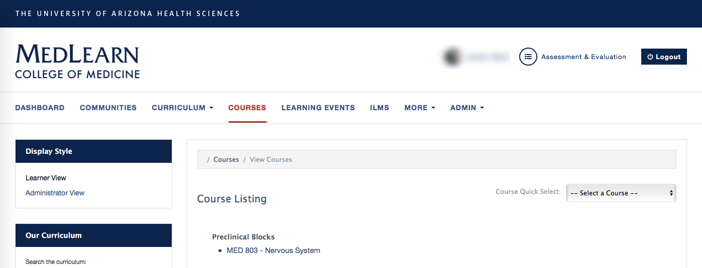

Course Setup

- Click the Courses tab
- Click on the applicable course
- Select Administrator View from the left display style menu
- The Setup tab is open by default
- Enter Course Contacts information
- Attach Course Keywords (A.K.A. MeSH Terms)
- Attach Course Objectives and Additional Tags (A.K.A. Vocabulary)
- Press the Show Curriculum Tag Sets button
- A list of categories will be shown
- Select the appropriate course objectives and/or vocabularies
- It/they will be added to the course
- Press the Hide Curriculum Tag Sets button to collapse the list
-
Verify Course Enrollment
- Enrolling students in a course is a multi-step process. Make sure you click save before navigating away from the course you are editing.
- First, you need to create a Course List cohort (Admin / Manage Cohorts / Add New Cohort)
- Once the course list is created, return to the course you are working on and select the appropriate Enrollment Period from the dropdown menu. The selected period will display in the Active Periods section.
- In the active periods section click Add Audience, and attach the appropriate course list.
-
Press the Save button. This will direct you to the Content tab.